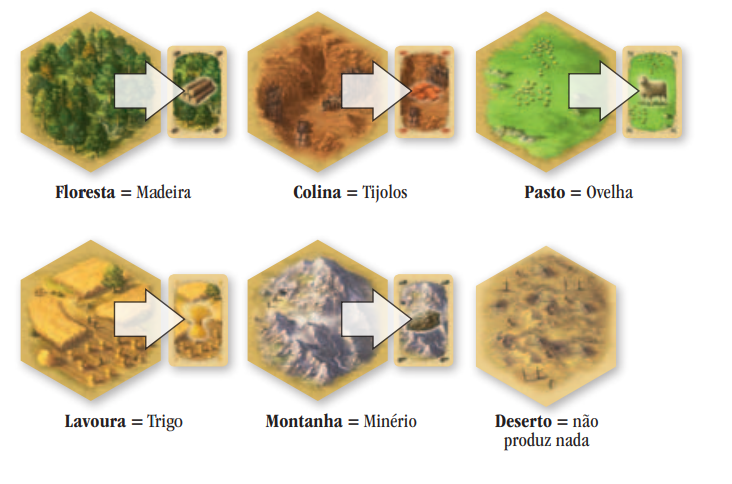
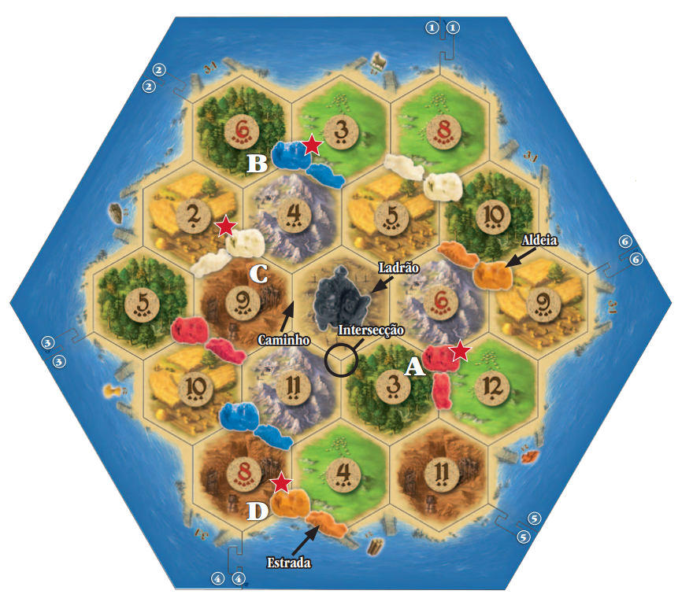

Catan, anteriormente conhecido como The Settlers of Catan ou simplesmente Settlers, é um jogo de tabuleiro multijogador desenvolvido por Klaus Teuber. Foi publicado pela primeira vez em 1995 na Alemanha por Franckh-Kosmos Verlag (Kosmos) como Die Siedler von Catan.
Os jogadores assumem os papéis de colonos, cada um tentando construir e desenvolver propriedades enquanto negocia e adquire recursos. Os jogadores ganham pontos de vitória à medida que seus assentamentos crescem; o primeiro a atingir um determinado número de pontos de vitória, normalmente 10, vence.
Após seu lançamento, The Settlers of Catan se tornou um dos primeiros jogos de tabuleiro de estilo alemão a alcançar popularidade fora da Europa. de 2020, mais de 32 milhões de cópias em 40 idiomas foram vendidas
À sua frente está a ilha de Catan, dividida em 19 terrenos rodeados por mar. O objetivo de cada jogador é colonizar a ilha e expandir seu território para se tornar o maior e mais glorioso em Catan
Em Catan existem cinco tipos diferentes de terrenos e um deserto. Cada um deles produz uma matéria-prima. O deserto não produz nada.
Cada jogador inicia o jogo com 2 aldeias e 2 estradas. Cada aldeia vale 1 ponto. O primeiro jogador a conseguir 10 pontos na sua vez ganha o jogo.
Para conseguir pontos é necessário construir novas estradas e novas aldeias. Também é necessário fazer suas aldeias se transformar em cidades. Cada cidade vale 2 pontos. No entanto, para construir, são necessárias matérias-primas.
Como adquirir matérias-primas? Muito fácil: a cada rodada se define que terrenos irão produzir, através do lançamento dos dados. É por esse motivo que existe uma ficha com um número em cima de cada terreno. Se, por exemplo, sair três na soma dos dados, os dois terrenos marcados com o número três produzem matéria-prima (se seguirmos o exemplo da ilustração, a floresta e o pasto produzem madeira e ovelha, respectivamente).
Os jogadores só podem obter matérias-primas dos terrenos em que possuem uma das suas aldeias ou cidades ao redor.A aldeia vermelha (A) está ao redor de um terreno de floresta, e o azul (B) de um pasto. Por isso, se sair três nos dados, o jogador vermelho obterá madeira, e o azul obterá ovelha.
As aldeias e as cidades geralmente rodeiam dois ou três tipos de terrenos. Elas podem produzir até 3 tipos diferentes de matérias-primas baseados no resultado dos dados. Em nosso exemplo, a aldeia branca (C) está adjacente a 3 terrenos: lavoura, montanha e colina, enquanto a aldeia laranja (D) se encontra na costa, por isso apenas se poderá obter dela rendimentos de 2 terrenos (colina e pasto).
Você raramente terá aldeias em todos os terrenos durante o jogo, portanto você não obterá algumas matérias-primas. Para continuar a construir, você necessita de determinadas combinações de matériasprimas. Por esse motivo, poderá fazer trocas comerciais com os outros jogadores. Façalhes uma oferta! Um negócio bem sucedido pode trazer uma grande construção.
É possívelconstruir uma nova aldeia emqualquer intersecção livre,sempre quetenha acesso através de uma estrada sua e desde que a aldeiamais próxima esteja ao menos a duas intersecções de distância.
Pense muito bem ao escolher o local onde vai construir as suas aldeias. Abaixo dos números das fichas há diferentes quantidades de pontinhos. Os númeroscommais pontinhos têmmais probabilidade desair nos dados:é o caso dos números 6 e 8, que aparecemcomcinco pontinhos.
Se o jogador tiver 10 ou mais pontos na sua vez, o jogo termina e ele é o vencedor! Se alcançar 10 ou mais pontos quando não for a sua vez, o jogo continua até que volte em sua vez. Se o jogador da vez conseguir os 10 pontos, ele será o vencedor.
- Como alcançar 10 pontos:
- Soma das aldeias (1 ponto cada),
- Soma das cidade (2 pontos cada),
- Cartas de desenvolvimento de Pontos,
- Cartela de Maior Cavalaria (2 pontos),
- Cartela de Maior Estrada (2 pontos).